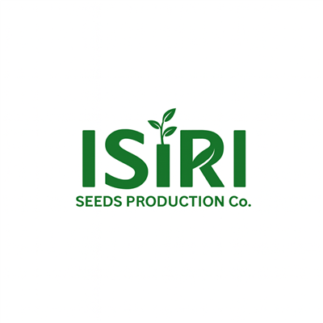

Innovation in every solution — from field to final delivery
Developed under expert supervision and strict field quality inspections, our seeds are thoroughly tested to ensure compliance with the highest industry standards.
Diverse seed portfolio for different climates and agricultural needs across regions.
Generations of agricultural knowledge and local expertise combined with global standards.

ISIRI is dedicated to advancing seed production practices through innovation and providing superior seeds to its clients. We combine traditional expertise with modern innovation to deliver seeds that meet global standards.
Every plant during the seed production process goes through rigorous quality checks to ensure purity, performance, and consistency. We work closely with growers to understand their evolving needs.
Connect with our agricultural experts and discover premium seed solutions tailored to your needs.